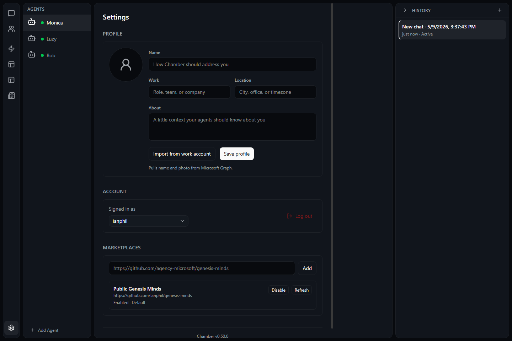

Use this page when you need to sign in, switch GitHub accounts, adjust Chamber,
install updates, or understand what happens when the window closes.
GitHub sign-in and sign-out
Chamber asks you to sign in with GitHub so your minds can use your GitHub
Copilot access. Signing in also helps Chamber show the accounts, models, and
marketplace content available to you.
1
Open Settings
Use the Settings entry in Chamber or the account area shown in the app.
2
Choose Sign in with GitHub
Chamber opens a GitHub sign-in page in your browser. Follow the prompts,
then return to Chamber when the browser says sign-in is complete.
3
Sign out when needed
In Settings, choose the signed-in account and select Sign out. Minds will
stop using that account until you sign in again.
Switch between GitHub accounts
If you use more than one GitHub account, Chamber can switch which one is active.
The active account is the one Chamber uses when a mind talks to Copilot, checks
available models, or reaches GitHub-backed marketplace content.
How active account behavior works
The active account controls which Copilot plan and models are available.
Marketplace content may change when you switch accounts.
Existing mind folders stay on your computer; switching accounts does not move them.
If a mind was started with one account, start a fresh conversation after switching accounts.
Switch accounts safely
Open Settings.
Open the accounts area.
Choose the account you want to use.
If the account is not listed, sign in with GitHub and add it.
Start a new message or refresh the current screen if old account details are still shown.
Use Settings
Settings is where you review Chamber behavior for your device. Use it when you
want to check your account, update the app, review notifications, or change how
Chamber behaves in the background.

Settings collects account, marketplace, update, and desktop behavior controls in one place.
Common settings to review
Account status: confirm which GitHub account is active.
Updates: check for a new Chamber version and open the updater guide when you need icon help.
Notifications: choose whether Chamber can alert you about completed work.
Desktop behavior: confirm whether closing the window keeps Chamber in the tray.
Check, download, and install updates
Updates keep Chamber current with fixes and improvements. You can check for
updates from Settings. If an update is available, Chamber will guide you through
downloading and installing it.
Chamber also has a dedicated updater icon in the Activity Bar footer. See the
Auto Updater guide for the download, restart,
retry, and yellow-dot icon meanings.
1
Check for updates
Open Settings, then choose the update option to ask Chamber to check.
2
Download the update
If Chamber finds a newer version, follow the prompt to download it. Keep
the app open until the download finishes.
3
Install when ready
Save important work, then choose the install or restart option. Chamber may
close and reopen during installation.
Tray behavior, close, quit, and notifications
Chamber is a desktop app. Depending on your settings and operating system, closing
the window may leave Chamber running in the tray so minds can finish work and send
notifications.
Close vs quit
Close hides the window. Chamber may keep running in the tray.
Quit fully exits Chamber and stops background work on this device.
Use quit before shutting down, switching users, or troubleshooting a stuck update.
Notifications
Chamber may notify you when work finishes, a scheduled item runs, or attention is needed.
If you do not see notifications, check both Chamber settings and your operating system notification settings.
Notifications can appear even when the main window is closed if Chamber is still running in the tray.
External links open in your browser
Links to GitHub, documentation, marketplace sources, and sign-in pages open in
your normal web browser instead of inside Chamber. This helps you see the real web
address before you sign in, download, or trust a source.
When a browser opens
Check that the address is the site you expected.
Use your browser's normal password manager and security warnings.
Return to Chamber after the browser step is finished.